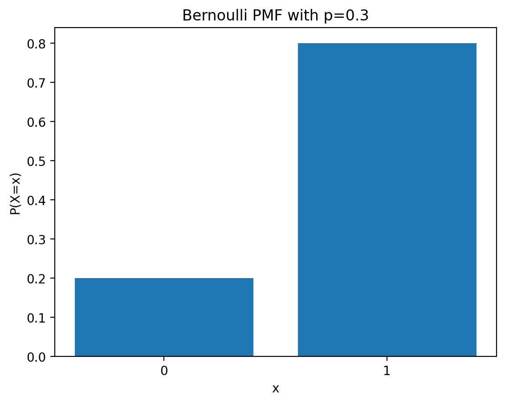
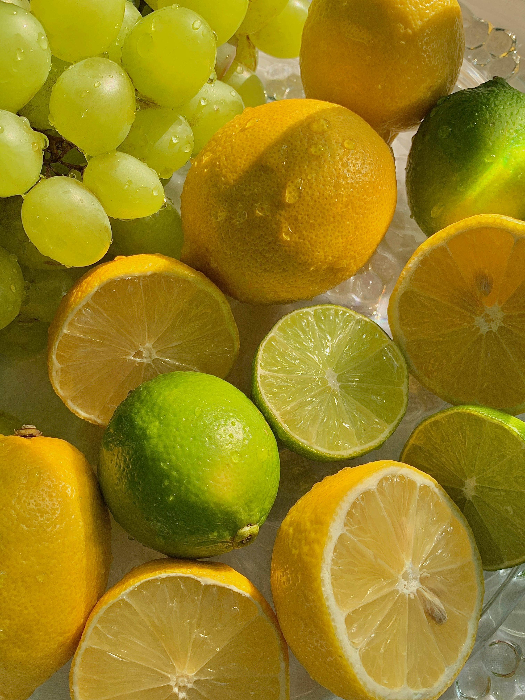
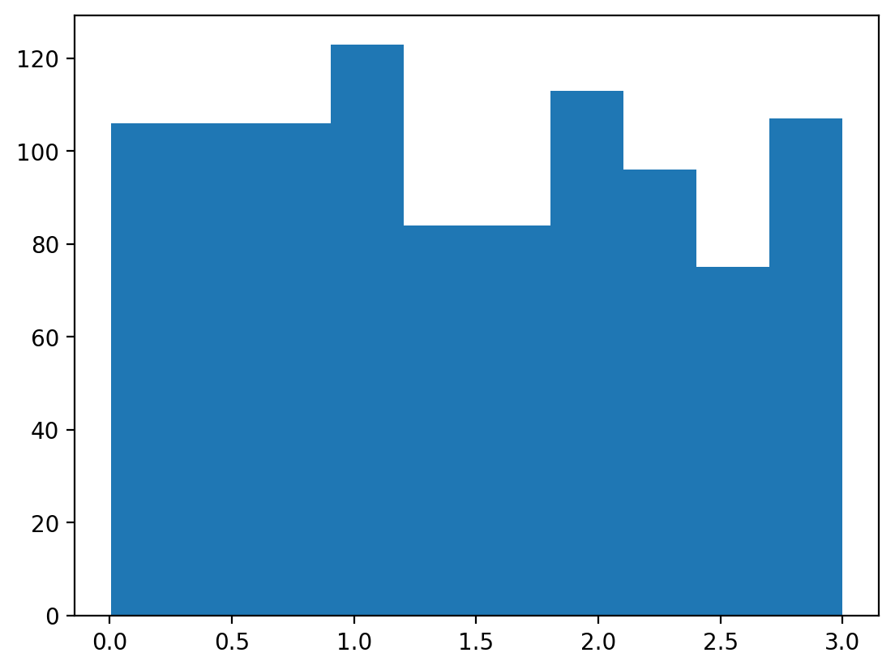
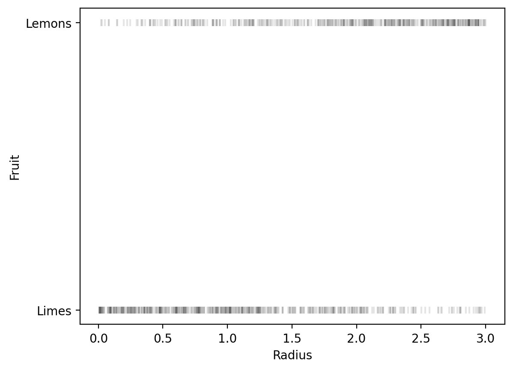
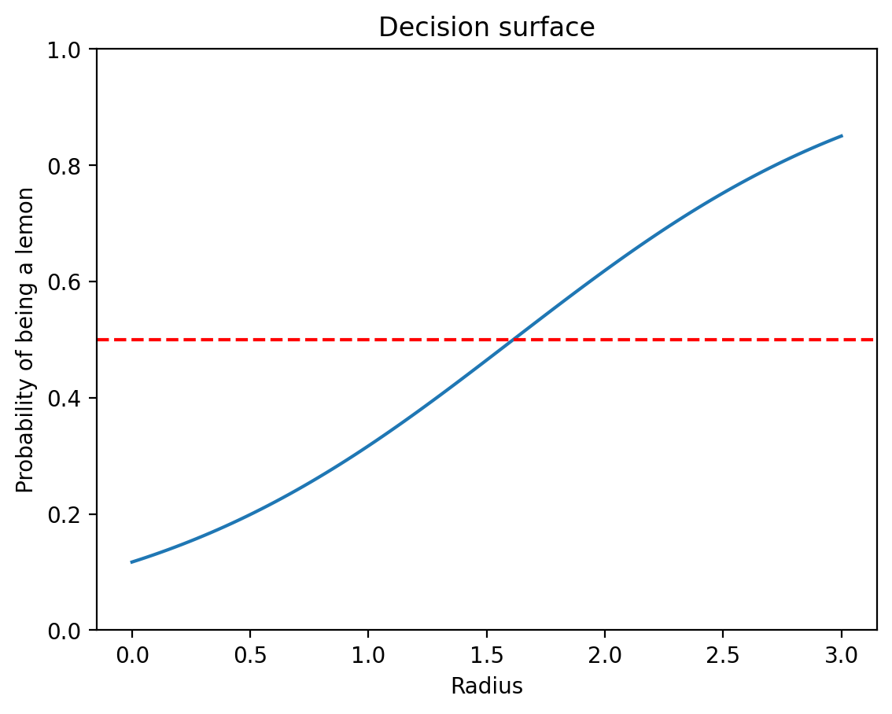
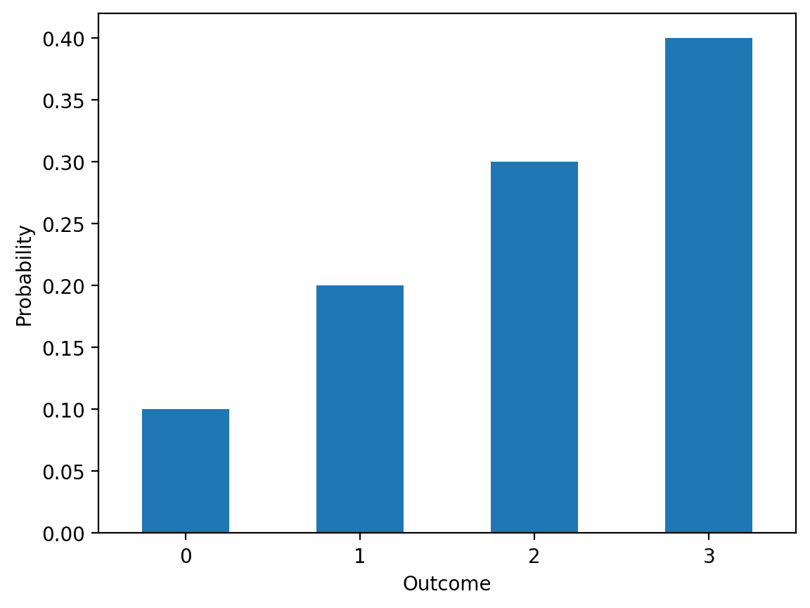
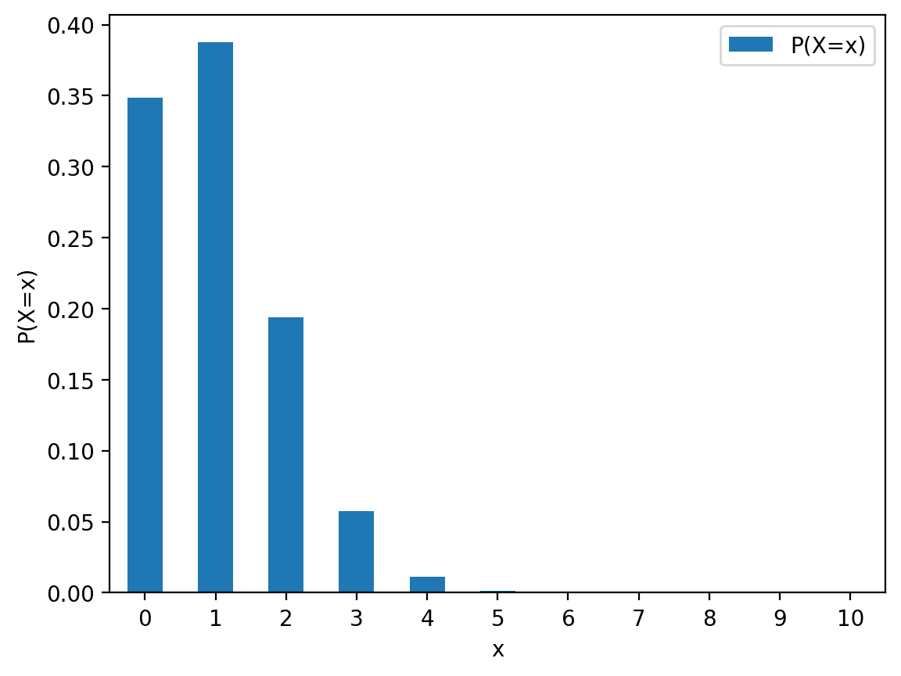
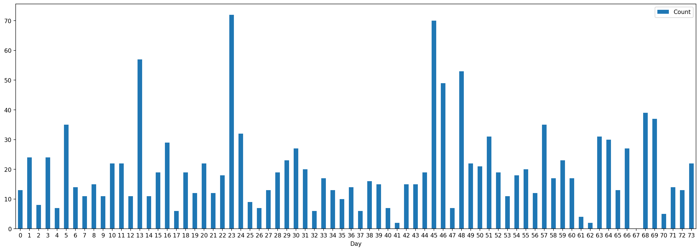
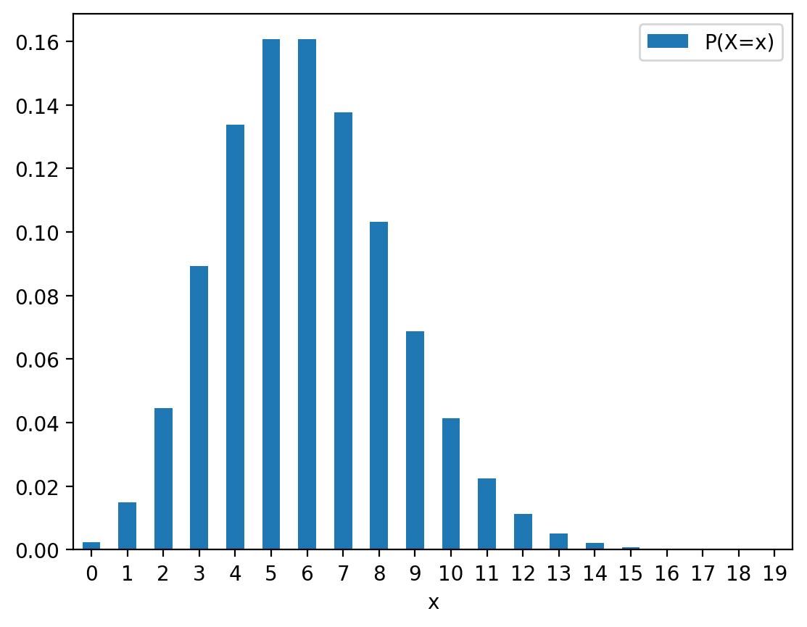

import matplotlib.pyplot as plt
import numpy as np
import torch
import torch.nn as nn
import pandas as pd
# Retina mode
%matplotlib inline
%config InlineBackend.figure_format = 'retina'PMF and some common discrete distributions
ML
PMF of Bernoulli distribution
Let \(X\) be a Bernoulli random variable. \(X\) can take on one of two values, 0 or 1, with probabilities \(1-p\) and \(p\), respectively.
Example: Suppose we flip a coin with probability \(p\) of landing heads. Let \(X\) be the random variable that is 1 if the coin lands heads and 0 if the coin lands tails.
The probability mass function (PMF) of a Bernoulli random variable is given by:
\[ p_X(x) = \begin{cases} 1-p, & \text{if } x = 0, \\ p, & \text{if } x = 1. \end{cases} \]
or, equivalently,
\[ p_X(x) = p^x(1-p)^{1-x}, \quad x \in \{0, 1\}. \]
where \(0 < p < 1\) is called the Bernoulli parameter. We write
\[ X \sim \text{Bernoulli}(p) \]
to denote that \(X\) is drawn from a Bernoulli distribution with parameter \(p\).
The probability mass function (PMF) of a Bernoulli distribution is given by: \[ \begin{equation} f(x) = \begin{cases} p & \text{if } x = 1 \\ 1 - p & \text{if } x = 0 \end{cases} \end{equation} \]
where \(p\) is the probability of success.
## Plotting the PMF
def plot_pmf_bernoilli(p, title):
x = np.array([0, 1])
y = np.array([1-p, p])
plt.bar(x, y)
plt.title(title)
plt.xlabel('x')
plt.ylabel('P(X=x)')
plt.xticks([0, 1])plot_pmf_bernoilli(0.3, 'Bernoulli PMF with p=0.3') 
plot_pmf_bernoilli(0.8, 'Bernoulli PMF with p=0.3') 
dist = torch.distributions.Bernoulli?Init signature: torch.distributions.Bernoulli(probs=None, logits=None, validate_args=None)
Docstring:
Creates a Bernoulli distribution parameterized by :attr:`probs`
or :attr:`logits` (but not both).
Samples are binary (0 or 1). They take the value `1` with probability `p`
and `0` with probability `1 - p`.
Example::
>>> # xdoctest: +IGNORE_WANT("non-deterministic")
>>> m = Bernoulli(torch.tensor([0.3]))
>>> m.sample() # 30% chance 1; 70% chance 0
tensor([ 0.])
Args:
probs (Number, Tensor): the probability of sampling `1`
logits (Number, Tensor): the log-odds of sampling `1`
File: ~/mambaforge/lib/python3.12/site-packages/torch/distributions/bernoulli.py
Type: type
Subclasses: Bernoulli Distribution in PyTorch
# Create a Bernoulli distribution with p=0.9
dist = torch.distributions.Bernoulli(probs=0.9)distBernoulli(probs: 0.8999999761581421)# Print all attributes of the Bernoulli distribution -- do not have __ or _ in the beginning
attrs = [attr for attr in dir(dist) if not attr.startswith('_')]
pd.Series(attrs)0 arg_constraints
1 batch_shape
2 cdf
3 entropy
4 enumerate_support
5 event_shape
6 expand
7 has_enumerate_support
8 has_rsample
9 icdf
10 log_prob
11 logits
12 mean
13 mode
14 param_shape
15 perplexity
16 probs
17 rsample
18 sample
19 sample_n
20 set_default_validate_args
21 stddev
22 support
23 variance
dtype: objectdist.meantensor(0.9000)dist.probstensor(0.9000)dist.supportBoolean()dist.log_prob(torch.tensor(1.0)).exp()tensor(0.9000)dist.log_prob(torch.tensor(0.0)).exp()tensor(0.1000)try:
dist.log_prob(torch.tensor(0.5)).exp()
except Exception as e:
print(e)Expected value argument (Tensor of shape ()) to be within the support (Boolean()) of the distribution Bernoulli(probs: 0.8999999761581421, logits: 2.1972243785858154), but found invalid values:
0.5dist.sample()tensor(0.)samples = dist.sample(torch.Size([1000]))samples[:10]tensor([1., 1., 1., 1., 1., 1., 1., 1., 1., 1.])samples.mean()tensor(0.9110)Lime vs Lemon

https://www.healthline.com/nutrition/lime-vs-lemon
Limes are small, green, and more tart than lemons, which are larger, oval-shaped, and yellow. Nutritionally, they’re almost identical and share many of the same potential health benefits.
Lemons are usually bright yellow, while limes are typically a bright shade of green. However, certain types of limes will turn yellow as they ripen, making the distinction a little more difficult.
Limes are also smaller and rounder than lemons. They can vary in size but are usually 1–2 inches (3–6 centimeters) in diameter.
In comparison, lemons tend to be 2–4 inches (7–12 centimeters) in diameter and have a more oval or oblong shape.
Main question
Given a fruit (lime or lemon) and its radius, we want to predict if it is a lime or a lemon.
Let us denote the radius of the fruit by \(r\) and the type of the fruit by \(y\) where \(y=0\) if the fruit is a lime and \(y=1\) if the fruit is a lemon.
We want to model the probability of the fruit being a lemon given its radius, i.e., we want to model \(p(y=1|r)\).
Generative process
# Set random seed
torch.manual_seed(42)<torch._C.Generator at 0x12ab80ab0>radius_array = torch.distributions.Uniform(0, 3).sample((1000,))radius_array[:10]tensor([2.6468, 2.7450, 1.1486, 2.8779, 1.1713, 1.8027, 0.7697, 2.3809, 2.8223,
0.3996])_ = plt.hist(radius_array)
We start by modeling the generative process of the data.
We assume if w*r + b > 0, then the fruit is a lemon, otherwise it is a lime.
Let us assume that w_true = 1.2 and b_true = -2.0.
def linear(r, w, b):
return w * r + b
w_true = 1.2
b_true = -2.0
logits = linear(radius_array, w_true, b_true)pd.Series(logits.numpy()).describe()count 1000.000000
mean -0.249277
std 1.045096
min -1.991556
25% -1.134019
50% -0.342291
75% 0.646800
max 1.599296
dtype: float64Can we use logits to model the probability of the fruit being a lemon given its radius?
No! These logits can be any real number, but we want to model the probability of the fruit being a lemon given its radius, which is a number between 0 and 1.
We can use the sigmoid function to map the logits to a number between 0 and 1.
\[ \sigma(x) = \frac{1}{1 + e^{-x}} \]
def sigmoid(x):
return 1 / (1 + torch.exp(-x))
probs = sigmoid(logits)df = pd.DataFrame({
'radius': radius_array.numpy(),
'logits': logits.numpy(),
'probabilities': probs.numpy()
})df.head()| radius | logits | probabilities | |
|---|---|---|---|
| 0 | 2.646808 | 1.176169 | 0.764258 |
| 1 | 2.745012 | 1.294014 | 0.784826 |
| 2 | 1.148591 | -0.621690 | 0.349397 |
| 3 | 2.877917 | 1.453500 | 0.810537 |
| 4 | 1.171345 | -0.594386 | 0.355629 |
df.query('radius < 0.2').head()| radius | logits | probabilities | |
|---|---|---|---|
| 29 | 0.018481 | -1.977822 | 0.121551 |
| 50 | 0.015137 | -1.981835 | 0.121123 |
| 74 | 0.012186 | -1.985377 | 0.120747 |
| 99 | 0.048608 | -1.941670 | 0.125464 |
| 108 | 0.187182 | -1.775382 | 0.144874 |
We can observe as per our model, smaller fruits are more likely to be limes (probability of being a lemon is less) and larger fruits are more likely to be lemons (probability of being a lemon is more).
Generate a dataset
y_true = torch.distributions.Bernoulli(probs=probs).sample()df['y_true'] = y_true.numpy()df.query('y_true == 0').head(10)| radius | logits | probabilities | y_true | |
|---|---|---|---|---|
| 6 | 0.769717 | -1.076339 | 0.254199 | 0.0 |
| 9 | 0.399558 | -1.520531 | 0.179383 | 0.0 |
| 15 | 1.288213 | -0.454144 | 0.388376 | 0.0 |
| 17 | 1.721713 | 0.066056 | 0.516508 | 0.0 |
| 18 | 0.799740 | -1.040312 | 0.261090 | 0.0 |
| 19 | 1.882347 | 0.258817 | 0.564345 | 0.0 |
| 24 | 0.315945 | -1.620866 | 0.165085 | 0.0 |
| 25 | 0.808484 | -1.029819 | 0.263119 | 0.0 |
| 26 | 1.076438 | -0.708274 | 0.329980 | 0.0 |
| 28 | 1.641575 | -0.030110 | 0.492473 | 0.0 |
df.query('y_true == 1').head(10)| radius | logits | probabilities | y_true | |
|---|---|---|---|---|
| 0 | 2.646808 | 1.176169 | 0.764258 | 1.0 |
| 1 | 2.745012 | 1.294014 | 0.784826 | 1.0 |
| 2 | 1.148591 | -0.621690 | 0.349397 | 1.0 |
| 3 | 2.877917 | 1.453500 | 0.810537 | 1.0 |
| 4 | 1.171345 | -0.594386 | 0.355629 | 1.0 |
| 5 | 1.802686 | 0.163223 | 0.540715 | 1.0 |
| 7 | 2.380924 | 0.857109 | 0.702056 | 1.0 |
| 8 | 2.822314 | 1.386777 | 0.800077 | 1.0 |
| 10 | 2.803794 | 1.364553 | 0.796499 | 1.0 |
| 11 | 1.780739 | 0.136887 | 0.534168 | 1.0 |
We can notice that even though the probability of the event is very low, it still happens. This is the nature of the Bernoulli distribution.
df.query('y_true == 0').head(10)| radius | logits | probabilities | y_true | |
|---|---|---|---|---|
| 0 | 2.646808 | 1.176169 | 0.764258 | 0.0 |
| 3 | 2.877917 | 1.453500 | 0.810537 | 0.0 |
| 4 | 1.171345 | -0.594386 | 0.355629 | 0.0 |
| 5 | 1.802686 | 0.163223 | 0.540715 | 0.0 |
| 7 | 2.380924 | 0.857109 | 0.702056 | 0.0 |
| 9 | 0.399558 | -1.520531 | 0.179383 | 0.0 |
| 10 | 2.803794 | 1.364553 | 0.796499 | 0.0 |
| 14 | 2.223282 | 0.667939 | 0.661041 | 0.0 |
| 15 | 1.288213 | -0.454144 | 0.388376 | 0.0 |
| 18 | 0.799740 | -1.040312 | 0.261090 | 0.0 |
# Plot the data
plt.scatter(radius_array, y_true, alpha=0.1, marker='|', color='k')
plt.xlabel('Radius')
# Use Limes and Lemon markers only on y-axis
plt.yticks([0, 1], ['Limes', 'Lemons'])
plt.ylabel('Fruit')Text(0, 0.5, 'Fruit')
# Logistic regression model
class LogisticRegression(nn.Module):
def __init__(self):
super(LogisticRegression, self).__init__()
self.linear = nn.Linear(1, 1)
def forward(self, x):
return self.linear(x)
model = LogisticRegression()
# Training the model
criterion = nn.BCEWithLogitsLoss()
optimizer = torch.optim.Adam(model.parameters(), lr=0.01)
# Convert the data to PyTorch tensors
radius_tensor = radius_array.unsqueeze(1)
y_true_tensor = y_true.unsqueeze(1)
# Training loop
n_epochs = 1000
for epoch in range(n_epochs):
model.train()
optimizer.zero_grad()
# Forward pass
y_pred = model(radius_tensor)
# Compute loss
loss = criterion(y_pred, y_true_tensor)
# Backward pass
loss.backward()
# Update weights
optimizer.step()
if epoch % 100 == 0:
print(f'Epoch: {epoch}, Loss: {loss.item()}')
Epoch: 0, Loss: 0.8052948117256165
Epoch: 100, Loss: 0.6282714605331421
Epoch: 200, Loss: 0.593073308467865
Epoch: 300, Loss: 0.5790674686431885
Epoch: 400, Loss: 0.5744827389717102
Epoch: 500, Loss: 0.5731877088546753
Epoch: 600, Loss: 0.5728737711906433
Epoch: 700, Loss: 0.5728095769882202
Epoch: 800, Loss: 0.5727986693382263
Epoch: 900, Loss: 0.5727971196174622# Learned weights and bias
w_learned = model.linear.weight.item()
b_learned = model.linear.bias.item()
# Compare the true and learned weights and bias
print(f'True weights: {w_true}, Learned weights: {w_learned}')
print(f'True bias: {b_true}, Learned bias: {b_learned}')True weights: 1.2, Learned weights: 1.2514334917068481
True bias: -2.0, Learned bias: -2.0183537006378174# Test if a new fruit is a lime or a lemon
def predict_fruit(radius, model):
model.eval()
radius_tensor = torch.tensor([[radius]])
logits = model(radius_tensor)
prob = sigmoid(logits).item()
fruit = ['Lime', 'Lemon'][int(prob > 0.5)]
return fruit, prob
predict_fruit(0.5, model)('Lime', 0.19898711144924164)predict_fruit(1.5, model)('Lime', 0.46475765109062195)predict_fruit(2.0, model)('Lemon', 0.6188130378723145)# Decision surface
radius_values = torch.linspace(0, 3, 100).unsqueeze(1)
probs = sigmoid(model(radius_values)).detach()
plt.plot(radius_values, probs)
plt.xlabel('Radius')
plt.ylabel('Probability of being a lemon')
plt.title('Decision surface')
plt.ylim(0, 1)
plt.axhline(0.5, color='r', linestyle='--')

Categorical distribution
Say, we have a random variable \(X\) that can take on one of \(K\) possible values, \(1, 2, \ldots, K\). The probability mass function (PMF) of a categorical distribution is given by:
\[ p_X(x) = \begin{cases} \theta_1, & \text{if } x = 1, \\ \theta_2, & \text{if } x = 2, \\ \vdots \\ \theta_K, & \text{if } x = K. \end{cases} \]
where \(\theta_1, \theta_2, \ldots, \theta_K\) are the parameters of the categorical distribution and satisfy the following constraints:
\[ 0 \leq \theta_i \leq 1, \quad \sum_{i=1}^K \theta_i = 1. \]
We write
\[ X \sim \text{Categorical}(\theta_1, \theta_2, \ldots, \theta_K) \]
to denote that \(X\) is drawn from a categorical distribution with parameters \(\theta_1, \theta_2, \ldots, \theta_K\). The categorical distribution is a generalization of the Bernoulli distribution to more than two outcomes.
If we had a fair 6-sided die, the PMF of the die roll would be given by:
\[ p_X(x) = \frac{1}{6}, \quad x \in \{1, 2, 3, 4, 5, 6\}. \]
Imagenet
The ImageNet project is a large visual database designed for use in visual object recognition research.

theta_vec = torch.tensor([0.1, 0.2, 0.3, 0.4])
#
ser = pd.Series(theta_vec.numpy())
ser.plot(kind='bar', rot=0)
plt.xlabel('Outcome')
plt.ylabel('Probability')Text(0, 0.5, 'Probability')
dist = torch.distributions.Categorical(probs=theta_vec)
print(dist)Categorical(probs: torch.Size([4]))dist.supportIntegerInterval(lower_bound=0, upper_bound=3)dist.log_prob(torch.tensor(0.0)).exp()tensor(0.1000)try:
dist.log_prob(torch.tensor(4.0)).exp()
except Exception as e:
print(e)Expected value argument (Tensor of shape ()) to be within the support (IntegerInterval(lower_bound=0, upper_bound=3)) of the distribution Categorical(probs: torch.Size([4]), logits: torch.Size([4])), but found invalid values:
4.0samples = dist.sample(torch.Size([1000]))samples[:10]tensor([2, 3, 2, 1, 0, 3, 3, 3, 2, 3])pd.value_counts(samples.numpy(), normalize=True).sort_index()/var/folders/z8/gpvqr8mn3w9_f38byxhnsk780000gn/T/ipykernel_11326/3899675828.py:1: FutureWarning: pandas.value_counts is deprecated and will be removed in a future version. Use pd.Series(obj).value_counts() instead.
pd.value_counts(samples.numpy(), normalize=True).sort_index()0 0.115
1 0.192
2 0.276
3 0.417
Name: proportion, dtype: float64Quality control in factories
A factory produces electronic chips, and each chip has a probability \(p\) of being defective due to manufacturing defects. The quality control team randomly selects 10 chips from a large production batch and checks how many are defective.
How can we model the number of defective chips in the sample?
We can model the number of defective chips in the sample using a binomial distribution.
Let \(X\) be the number of defective chips in the sample. \(X\) can take on values \(0, 1, 2, \ldots, 10\). The probability mass function (PMF) of a binomial distribution is given by:
\[ p_X(x) = \binom{n}{x} p^x(1-p)^{n-x}, \quad x \in \{0, 1, 2, \ldots, 10\}. \]
where \(n\) is the number of chips in the sample, \(0 < p < 1\) is the probability of a chip being defective, and \(\binom{n}{x}\) is the binomial coefficient, which is the number of ways to choose \(x\) defective chips from \(n\) chips.
p_failure = 0.1
n_chips = 10
dist = torch.distributions.Binomial(n_chips, p_failure)distBinomial(total_count: 10.0, probs: 0.10000000149011612)dist.supportIntegerInterval(lower_bound=0, upper_bound=10.0)x = torch.arange(0, n_chips+1)
y = dist.log_prob(x).exp()
df_prob_binomial = pd.DataFrame({
'x': x.numpy(),
'P(X=x)': y.numpy().round(5)
})
df_prob_binomial| x | P(X=x) | |
|---|---|---|
| 0 | 0 | 0.34868 |
| 1 | 1 | 0.38742 |
| 2 | 2 | 0.19371 |
| 3 | 3 | 0.05740 |
| 4 | 4 | 0.01116 |
| 5 | 5 | 0.00149 |
| 6 | 6 | 0.00014 |
| 7 | 7 | 0.00001 |
| 8 | 8 | 0.00000 |
| 9 | 9 | 0.00000 |
| 10 | 10 | 0.00000 |
df_prob_binomial.plot(kind='bar', x='x', y='P(X=x)', rot=0)
plt.xlabel('x')
plt.ylabel('P(X=x)')Text(0, 0.5, 'P(X=x)')
samples = dist.sample(torch.Size([1000]))samples[:5]tensor([2., 0., 1., 3., 0.])pd.Series(samples.numpy()).value_counts().sort_index()0.0 354
1.0 390
2.0 184
3.0 58
4.0 12
5.0 1
6.0 1
Name: count, dtype: int64Number of SMS rceived per day
Hat tip: Bayesian Methods for Hackers book
url = "https://raw.githubusercontent.com/CamDavidsonPilon/Probabilistic-Programming-and-Bayesian-Methods-for-Hackers/refs/heads/master/Chapter1_Introduction/data/txtdata.csv"
data = pd.read_csv(url, header=None)data.index.name = 'Day'
data.columns = ['Count']data| Count | |
|---|---|
| Day | |
| 0 | 13.0 |
| 1 | 24.0 |
| 2 | 8.0 |
| 3 | 24.0 |
| 4 | 7.0 |
| ... | ... |
| 69 | 37.0 |
| 70 | 5.0 |
| 71 | 14.0 |
| 72 | 13.0 |
| 73 | 22.0 |
74 rows × 1 columns
fig, ax = plt.subplots(figsize=(21, 7))
data.plot(kind='bar', rot=0, ax=ax)
How can you model the number of SMS messages you receive per day?
We can model the number of SMS messages you receive per day using a Poisson distribution.
Let \(X\) be the number of SMS messages you receive per day. \(X\) can take on values \(0, 1, 2, \ldots\). The probability mass function (PMF) of a Poisson distribution is given by:
\[ p_X(x) = \frac{\lambda^x e^{-\lambda}}{x!}, \quad x \in \{0, 1, 2, \ldots\}. \]
where \(\lambda > 0\) is the average number of SMS messages you receive per day.
rate_param = 6
dist = torch.distributions.Poisson(rate_param)distPoisson(rate: 6.0)dist.supportIntegerGreaterThan(lower_bound=0)x_range = torch.arange(0, 20)
y = dist.log_prob(x_range).exp()
df_prob_poisson = pd.DataFrame({
'x': x_range.numpy(),
'P(X=x)': y.numpy().round(6)
})
df_prob_poisson| x | P(X=x) | |
|---|---|---|
| 0 | 0 | 0.002479 |
| 1 | 1 | 0.014873 |
| 2 | 2 | 0.044618 |
| 3 | 3 | 0.089235 |
| 4 | 4 | 0.133853 |
| 5 | 5 | 0.160623 |
| 6 | 6 | 0.160623 |
| 7 | 7 | 0.137677 |
| 8 | 8 | 0.103258 |
| 9 | 9 | 0.068839 |
| 10 | 10 | 0.041303 |
| 11 | 11 | 0.022529 |
| 12 | 12 | 0.011264 |
| 13 | 13 | 0.005199 |
| 14 | 14 | 0.002228 |
| 15 | 15 | 0.000891 |
| 16 | 16 | 0.000334 |
| 17 | 17 | 0.000118 |
| 18 | 18 | 0.000039 |
| 19 | 19 | 0.000012 |
df_prob_poisson.plot(kind='bar', x='x', y='P(X=x)', rot=0)
Sales Calls Before a Successful Sale
A sales representative makes cold calls to potential customers. Each call has a probability \(p\) of resulting in a successful sale. We want to model the number of calls needed before achieving a successful sale.
We can model the number of calls needed before achieving a successful sale using a geometric distribution.
Let \(X\) be the number of calls needed before achieving a successful sale. \(X\) can take on values \(1, 2, 3, \ldots\). The probability mass function (PMF) of a geometric distribution is given by:
\[ p_X(x) = (1-p)^{x-1}p, \quad x \in \{1, 2, 3, \ldots\}. \]
where \(0 < p < 1\) is the probability of a successful sale on each call.
p = 0.3
dist = torch.distributions.Geometric(p)distGeometric(probs: 0.30000001192092896)dist.support IntegerGreaterThan(lower_bound=0)dist.sample(torch.Size([10])) tensor([5., 7., 1., 4., 5., 0., 3., 0., 5., 3.])